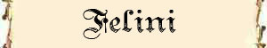
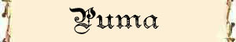

Carica Migliorata;
Sorprendere la Preda - Moderato;
Balzo Violento;


|
|
Ambiente/Habitat | Colline e Montagne Temperate |
| Frequenza | Uncommon | |
| Organizzazione | Solitary | |
| Periodo di Attività | Qualsiasi | |
| Dieta | Carnivora | |
| Intelligenza | Semi-Intelligent (3) | |
| Punti Combattimento | Nessuno | |
| Tesoro | Nessuno | |
| Allineamento Dominante | Neutrale | |
| Numero di Apparizione | 1 | |
| Classe Armatura | 6 [10 base, -1 corazza, -3 destrezza] | |
| Movimento | 10 esagoni | |
| Dadi Vita | 3 (+3 punti ferita) | |
| Thac0 | 17 | |
| Numero di Attacchi | Artiglio/Artiglio/Morso | |
| Danni | 1d3 (Taglio)/1d3 (Taglio)/1d6 (Taglio) | |
| Poteri Offensivi | Istinto Predatorio; Carica Migliorata; Sorprendere la Preda - Moderato; Balzo Violento; |
|
| Poteri Difensivi | Robustezza Superiore [+3 punti ferita]; | |
| Poteri Generici | Salto Inferiore; | |
| Vulnerabilità | Nessuna | |
| Resistenza alla Magia | Nessuna | |
| Sensi | Oscurovisione; Sensi Superiori; | |
| Dimensioni | Medium (150 cm. lunghezza) | |
| Morale | Steady (12) | |
| Valore in Punti Esperienza | 245 |
|
TIRI SALVEZZA DELLA CREATURA |
|||||||
| CORAGGIO | ENERGIA VITALE | MAGIA | MALATTIA | MENTE | RIFLESSI | ROBUSTEZZA | VELENO |
| 0 | 0 | 0 | 0 | 0 | +5% | 0 | 0 |
| 49 | 55 | 62 | 47 | 60 | 49 | 53 | 49 |
Descrizione
Il puma è alto 70 cm circa dalla spalla. La lunghezza di un esemplare adulto, esclusa la coda, può raggiungere i 150 cm per un peso di circa 80 kg. Il pelo è corto, morbido, folto e dal colore giallastro/marrone chiaro ed uniforme. Le zampe anteriori hanno 5 dita, mentre quelle posteriori 4, con unghie retrattili. La loro testa è piccola e tondeggiante. Nella bocca hanno quattro grandi canini. Rari sono i puma dal manto rossastro ed ancora più rari quelli dal manto bianco.
Combat
Il puma cerca di avvicinarsi alla vittima di sorpresa per poi balzarle addosso con un balzo violento.
ISTINTO PREDATORIO (Moderate Special Ability): La creatura possiede un forte istinto predatorio, per tale motivo costei riceve un bonus costante di +1 ai suoi tiri per colpire.
CARICA MIGLIORATA (Least Special Ability): Il corpo di questa creatura, particolarmente adatto alla corsa, rende più facile alla stessa di caricare. Per tale motivo la creatura riceve costantemente un bonus di +2 al tiro per determinare il successo di una manovra di carica.
SORPRENDERE LA PREDA - MODERATO (Lesser Special Ability): Quando questa creatura avvista per prima una preda si mimetizza/nasconde nell'ambiente circostante per avvicinarsi alla stessa di soppiatto. La creatura ha una possibilità di nascondersi ed avvicinarsi senza essere vista pari al 50%. Se questa prova riesce la creatura attaccherà di sorpresa le proprie vittime costringendole ad effettuare un tiro sulla sorpresa con una penalità di -2.
BALZO VIOLENTO (Lesser Special Ability): Quando questa creatura riesce ad attaccare un avversario atterrando in corpo a corpo con lo stesso dopo aver effettuato un salto, riesce ad imprimere molta più forza al suo attacco ricevendo un bonus di +1 al tiro per colpire e di +2 ai danni (bonus che si considera come dovuto alla forza della creatura). Questo beneficio si applica solo al primo attacco effettuato dalla creatura nel round in cui è atterrata.
ROBUSTEZZA SUPERIORE (Typical Ability): Il fisico della creatura è estremamente robusto. Ciò conferisce alla stessa una robustezza superiore che gli garantisce 3 punti ferita supplementari.
SALTO INFERIORE (Lesser Special Ability): Quando questa creatura si trova sul terreno, una volta per ogni singolo round, può, in luogo di spostarsi di 3 metri di movimento (o anche di mezzo movimento), effettuare un grande balzo fino a 6 metri di distanza. Si noti che, qualora la creatura utilizza questo metodo di movimento per uscire dal corpo a corpo la stessa dovrà subire normalmente gli attacchi di opportunità.
Habitat/Society
Il puma è un felino timido, che evita solitamente gli insediamenti civilizzati. Se incontrato nelle terre selvagge, tuttavia, può attaccare creature anche di taglia superiore alla propria.
Ecology
I puma possono raggiungere dai 18 ai 20 anni d'età, sebbene la loro vita duri di solito un decennio. Possono essere addomesticati.
Mystical Resource Sourge (Zampa) Quantità: 1, Presenza 10% - Scuola di Magia: Alteration - Qualità della Risorsa: Common.